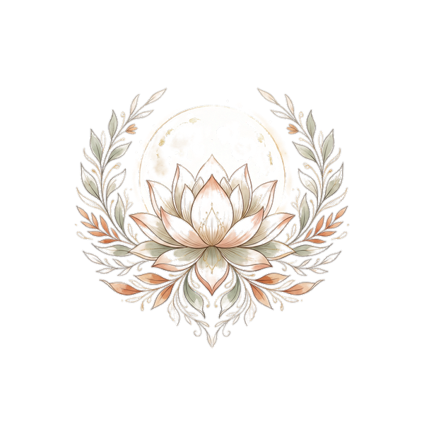

Witness
A tender yet resolute mirror
Together, I hold a tender yet resolute mirror. Through reflective practice you meet yourself authentically and gain distance from your experiences — unlocking new perspectives that shift how you think and how you feel.